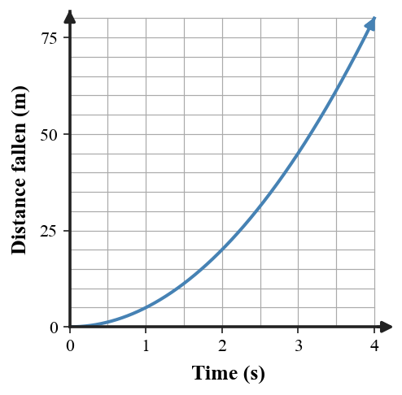

1. State what must be true about air resistance for the simple ideal free-fall model to apply.
2. What is the approximate change in speed each second for an object dropped from rest near Earth?
3. A ball thrown upward slows as it rises. What direction is its acceleration during the rise?
4. Does a falling object need to be moving downward to be in free fall? Explain using a thrown-up ball.
5. Which term applies when gravity is the only significant influence on an object’s motion?
6. A dropped ball has been falling for 5 s. Determine its speed using $g=10\text{ m/s}^2$.
7. A rock falls from rest for 2.5 s. Use $d=\frac12gt^2$ to determine its distance fallen.
8. Use the graph. Compare the total free-fall distance at 2 s and 4 s and explain why the graph becomes steeper.

9. A ball’s speed changes from 0 to 30 m/s during 3 s of free fall. Determine its average velocity magnitude for the interval, then calculate the distance traveled.
10. Total free-fall distances are 5, 20, 45, and 80 m at 1, 2, 3, and 4 s. Determine the distance traveled during the fourth second alone.
11. A coin and flat sheet of paper reach the floor at different times in air. Explain why that observation alone does not show different gravitational accelerations.
12. Compare a coin and feather falling in air with the same pair falling in vacuum. Use the contrast to separate the effects of gravity and air resistance.
13. Free fall means motion influenced significantly by
14. A dropped object gains about how much speed each second?
15. After 4 s from rest, free-fall speed is about
16. Ignoring air resistance, a heavy ball and a light ball have
17. Distance fallen from rest in 2 s is about
18. Which interval has the greatest distance for ideal free fall from rest?
19. A ball moving upward after release can still be in free fall because
20. At the very top of an ideal thrown ball’s path, the ball has